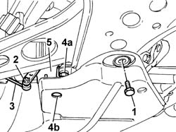
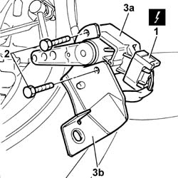

5540C42 SENSOR FOR CORRECTING/ALIGNING GAS DISCHARGE LIGHTING UNITS ON FRONT SUSPENSION - R R
- Path
- Procedures > 55 ELECTRICAL EQUIPMENT > 5540 EXTERIOR LIGHTING > 5540C HEADLAMP/LIGHT CLUSTER ALIGNMENT CORRECTION DEVICES > 5540C42 SENSOR FOR CORRECTING/ALIGNING GAS DISCHARGE LIGHTING UNITS ON FRONT SUSPENSION - R R
- Kind
- repair procedure (removal / refitting; the operation number is the code)
- Applies to
- all engines; all production periods
- Interactive page
- https://sloeber94.github.io/elrnDB-aGt/en/#/125001671
Applies to: all engines; all production periods
 Removing
Removing
 Refitting
RefittingPlace the vehicle on a lift and raise.
1. Undo the left rear bolt securing the guard under the engine to allow access to the sensor mounting bracket.
2. Working under the left front suspension, undo the nut fixing the connecting rod.
3. Disconnect the link from the sensor lever.
4. Undo the nut (4a) fixing the sensor mounting bracket working via the opening (4b).
5. Move the sensor complete with mounting bracket.

Applies to: all engines; all production periods
1. Disconnect the electrical connection.
Name | Connector | |
|---|---|---|
1 | Headlamp alignment front potentiometer | See K1 HEADLAMP ALIGNMENT FRONT POTENTIOMETER |
2. Undo the sensor fixing bolts.
3. Separate the sensor (3a) from the support (3b).

Applies to: all engines; all production periods
Refitting
RemovingCheck that the sensor is not damaged.
Working at the bench, place the sensor on the support and secure it using the bolts.
Connect the sensor electrical connection.
Name | Connector | |
|---|---|---|
- | Headlamp alignment front potentiometer | See K1 HEADLAMP ALIGNMENT FRONT POTENTIOMETER |
Position the sensor and support and secure it using the nut.
Connect the link to the sensor lever and tighten the nut.
Tighten the left rear bolt fastening the guard under the engine.
Remove the vehicle from the lift.
Zero the headlamp position using an Examiner or another tester.